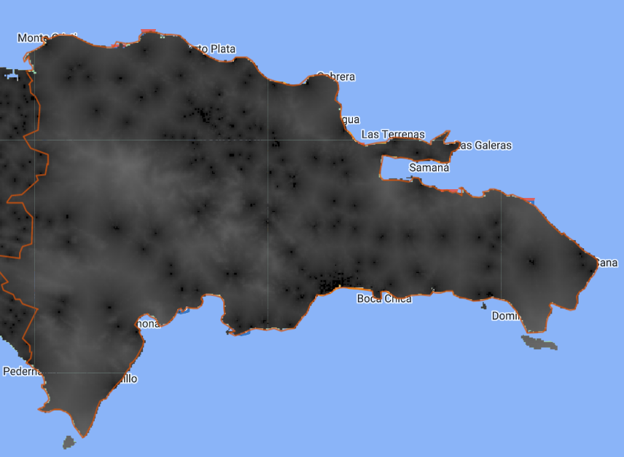
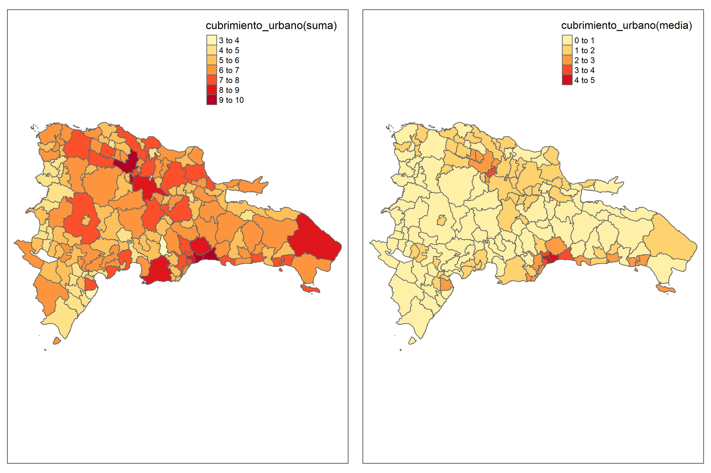

Estimación de la tasa de informalidad en República Dominicana empleando modelos de área con transformación arcoseno
Descarga de imágenes satelitales y validación de visual
Authors
Affiliation
Andrés Gutiérrez
CEPAL - Unidad de Estadísticas Sociales
Stalyn Guerrero
CEPAL - Unidad de Estadísticas Sociales
Published
February 25, 2023
Introducción.
La técnica de estimación de áreas pequeñas de Fay-Herriot, se basa en la combinación de información de una muestra de la población y de una fuente auxiliar, como las imágenes satelitales. Esta técnica se utiliza para mejorar la precisión de las estimaciones de áreas pequeñas, especialmente cuando la muestra de la población es limitada o no es representativa de la población completa.
Las imágenes satelitales pueden proporcionar información sobre características geográficas y ambientales de una zona, como la densidad de vegetación, el tipo de suelo, el uso del suelo, la topografía, entre otros. Esta información se puede utilizar para mejorar las estimaciones de las características de la población que se está estudiando.
La técnica Fay-Herriot es muy útil en áreas pequeñas donde la variabilidad de los datos es alta y la muestra es limitada. Las imágenes satelitales pueden ayudar a compensar la falta de información y proporcionar una fuente adicional de datos para mejorar las estimaciones.
Librerias requeridas
Para llevar a cabo la descarga de imágenes satelitales, es necesario realizar un proceso previo que involucra la interconexión entre tres herramientas: R, Python y Google Earth Engine. Una vez configuradas estas herramientas, es posible obtener información desde Google Earth Engine utilizando R. Es importante destacar que, para llevar a cabo esta tarea, se requiere del uso de diversas librerías que se encargan de procesar y descargar la información necesaria. A continuación, se presentan las librerías imprescindibles para llevar a cabo este proceso de manera eficiente.
memory.limit(50000) # Aumentar los limites de la memoria de procesamiento
[1] Inf
library(tidyverse) # Procesamiento de bases de datos.library(magrittr)library(reticulate) # Conexión con Pythonlibrary(rgee) # Conexión con Google Earth Enginelibrary(sf) # Paquete para manejar datos geográficoslibrary(tmap)library(sp)library(concaveman) # Colapso de polígonos dentro de un archivo shapefile. library(geojsonio) # Requerido por rgee
Inicializando Google Earth Engine desde R
El proceso de la descarga de información de Google Earth Engine comienza con el inicio de sesión en Google Earth Engine desde R, para ello se debe ejecutar el siguiente bloque de código:
donde “C://Users//sguerrero//Anaconda3//envs//rgee_py//python.exe” debe ser sustituido por la ruta donde creo el espacio de trabajo para Python. Ahora, a ejecutar la siguiente linea de código seleccione la opción 2, para agilizar el proceso.
Finalmente, al ejecutar el comando ‘rgee::ee_Initialize(drive = T)’, se inicia la conexión entre Google Earth Engine y R, lo que permite la descarga de imágenes satelitales. Con este paso completado, se está preparado para comenzar a trabajar con los datos satelitales disponibles en la plataforma.
Sí todo ha salido bien, debería ver un resultado como el que muestra a continuación.
Inicializando Google Earth Engine
Descarga de información del Satélite a nivel distrito.
A continuación, se explicará el proceso de descarga de información satelital a nivel de distrito. Para comenzar, es necesario contar con un archivo Shapefile, el cual es un formato utilizado para almacenar información geoespacial. Este tipo de archivo contiene datos vectoriales tales como puntos, líneas y polígonos, junto con sus atributos asociados. En el siguiente bloque de código esta dividido en dos partes. La primera parte del código se encarga de leer el Shapefile que contiene los datos de los distritos, utilizando la función read_sf del paquete sf. El archivo se almacena en la variable poligonos_distrito.
La segunda parte del código extrae los parámetros de una imagen satelital mediante el uso del paquete rgee. La imagen es una colección de imágenes nocturnas llamada NOAA/DMSP-OLS/NIGHTTIME_LIGHTS. Se filtran las imágenes de un periodo particular (“2013-01-01” hasta “2014-01-01”) y se selecciona una banda específica de la imagen (“stable_lights”). Luego, se utilizan las imágenes seleccionadas para generar una nueva banda de la imagen, que se almacena en la variable “luces”.
# Lectura del shapefile de los distritos. poligonos_distrito <-read_sf( "shapefiles2010/DMCenso2010.shp")# Extrayendo los parámetros de la imagen satelital. luces <- ee$ImageCollection("NOAA/DMSP-OLS/NIGHTTIME_LIGHTS") %>% ee$ImageCollection$filterDate("2013-01-01", "2014-01-01") %>% ee$ImageCollection$map(function(x) x$select("stable_lights")) %>% ee$ImageCollection$toBands()
El proceso de obtención de la medida de resumen (media) de los pixeles de una imagen se realiza distrito por distrito. Para homologar los códigos de Java en R, se utiliza una sintaxis específica. Cabe mencionar que cada píxel de una imagen representa una porción de la misma, y contiene información sobre el color y el brillo de dicha porción. Por lo tanto, la obtención de la medida de resumen de los pixeles resulta fundamental para el análisis de la imagen en cuestión.
El código presentado utiliza la librería purrr de R para extraer la media de los valores que toma cada pixel de la imagen satelital que hacen referencia a la iluminación nocturna para cada distrito presente en una lista de polígonos. La función map aplica una función a cada distrito presente en poligonos_distrito que extrae la media de brillo de stable_lights para el polígono que corresponde al distrito en cuestión. La función tryCatch maneja posibles errores en la extracción de la media de brillo para cada distrito y retorna un data.frame con los valores extraídos y el nombre del distrito correspondiente.
Dado que la información fue extraída por separada para cada distrito. A continuación se muestra como se crea un data.frame a partir de la lista DOM_luces_distrito
DOM_luces_distrito %<>%bind_rows()
Para obtener un mapa con los resultados obtenidos se ejecuta la sintaxis siguiente. Donde se realiza un inner_join entre las variables polígonos (poligonos_distrito) y la información satelital (DOM_luces_distrito). Con el resultado obtenido, es posible emplear la función tm_shape de la librería tmap para definir la variable map_dist que contiene las características necesarias para desarrollar el mapa. Ahora, con la función tm_polygons se especifica la variable, el titulo y la paleta de colores que llevará el mapa. Por último, guarda el resultado obtenido con la función tmap_save.
El mapa resultante se debe comparar con la información disponible en Google Earth Engine con el propósito de realizar una validación visual entre el imagen del satélite y la información descargada.
Descarga de información Satélite a nivel municipal
Para descargar información satelital del municipio, se sigue un proceso similar al utilizado para descargar información de los distritos, aunque con algunas variaciones en la sintaxis que dependen del tipo de información satelital que se esté obteniendo. Cabe mencionar que las variaciones en la sintaxis se deben a las particularidades de cada tipo de información satelital y no afectan significativamente el proceso de descarga de la misma. Cabe mencionar que, para cada una de las variables satelitales se emplea como medida de resumen la media y la suma.
Luces nocturnas
Siguiendo los pasos realizados para el distrito, se hace la lectura del shapefile para los municipio.
Note que, el cambio en el código es la variable poligonos_distrito que es sustituida por poligonos_minucipio, de esta forma obtenemos las medidas de resumen por municipios. Además, se incluye una linea de código para guardar los resultados en un archivo de formato .rds.
En el proceso de la suma la variación del código se presenta en la función de resumen, dado que es sustituido ee$Reducer$mean() por ee$Reducer$sum(), de esta forma se obtiene la suma de los valores de los pixeles dentro del polígono del municipio.
Cubrimiento de suelo urbano y cubrimiento de suelo cultivos
La siguiente imagen que se procesa corresponde al cubrimiento urbano y cubrimiento cultivos, para acceder a la información satelital se procede con la función ee$ImageCollection(), y se filtra por fecha con la función ee$ImageCollection$filterDate(). La información satelital se procesa con la función ee$ImageCollection$map(), que permite aplicar una función de resumen a cada imagen satelital presente en la colección. En este caso, se utiliza la función select() para seleccionar únicamente las bandas correspondientes cubrimiento de suelo urbano y al cubrimiento de suelos cultivos. Finalmente, se fusionan las imágenes satelitales resultantes en un único raster con la función ee$ImageCollection$toBands().
Dado que se cambio la fuente de información,es necesario realizar la actualización del código, para este caso cambiamos la variable luces por la variable tiposuelo y conservamos como medida de resumen la media.
el procesamiento anterior regresa un data.frame con tres columnas, el ENLACE, que corresponde al código del municipio, X2016_crops.coverfraction y X2016_urban.coverfraction.
Distancia a hospitales
Este conjunto de datos se basa en modelos de accesibilidad que se construyen a partir de información sobre la infraestructura de la atención médica y la geografía del terreno. Los modelos se basan en el tiempo de viaje esperado entre diferentes áreas geográficas y los diferentes tipos de instalaciones médicas, como hospitales, clínicas y consultorios médicos.
Este conjunto de datos muestra la escala y el impacto de la influencia humana en la superficie terrestre, a través de la recopilación y análisis de varios indicadores relacionados con la actividad humana, como la infraestructura construida, el uso del suelo, la densidad de población y la urbanización.
La escala del conjunto de datos es de 1 kilómetro cuadrado y se extiende a nivel mundial, proporcionando una visión general de la modificación humana en diferentes áreas del mundo. El conjunto de datos se actualiza regularmente para reflejar los cambios en la modificación humana en el tiempo.
Una vez que se han descargado y almacenado todas las variables satelitales en archivos ‘.rds’, es necesario consolidarlos en un único archivo para poder realizar el análisis. Para ello, se utiliza el código siguiente que combina las variables satelitales en un data.frame, para la media y la suma por separado. Además, el código también renombra las variables para hacerlas más descriptivas y fáciles de entender. En este caso se renombran variables como “luces_nocturnas”, cubrimiento_cultivo, cubrimiento_urbano, accesibilidad_hospitales, accesibilidad_hosp_caminado y modificacion_humana para reflejar de manera más clara los datos que representan. Una vez completada la consolidación, se puede comenzar a analizar los datos de manera más detallada.
Durante el proceso de validación del modelo, es fundamental la comparación de los mapas generados con las imágenes disponibles en Google Earth Engine. Para llevar a cabo esta tarea, es necesario realizar la unión entre los polígonos (shapefile) y las data.frame que contienen las variables satelitales. En este sentido, se utiliza el código presentado a continuación para crear los dos objetos: poligonos_promedio y poligonos_suma.
El objeto poligonos_promedio se genera a partir del shapefile de los municipios y la información de las variables satelitales que se han promediado. Por otro lado, el objeto poligonos_suma se construye de manera similar, pero utilizando la información de las variables satelitales que se han sumado.
El siguiente paso es crear los objeto m1 y m2, para lo cual usamos la función tm_shape de la librería tmap.
Para crear los mapas se utiliza una sintaxis similar para cada variable, por lo que se haces pocas modificaciones entre los bloques de código.
Modificacion humana
El presente código genera dos mapas utilizando la librería tmap de R. Primero, establece algunas opciones con tmap_options(check.and.fix = TRUE) para verificar y corregir posibles errores.
Luego, se crean dos objetos de mapa m1_modificacion_humana y m2_modificacion_humana, que muestran la variable modificacion_humana en dos formas diferentes: la suma y el promedio. Cada uno de los mapas utiliza tm_polygons() para representar los polígonos del mapa y las variables correspondientes. También establece un título para cada mapa con title y una paleta de colores con palette.
Finalmente, utiliza tmap_arrange() para combinar los dos mapas en una cuadrícula de dos columnas (ncol = 2) y una fila (nrow = 1), y lo guarda en el objeto map_modificacion_humana. Al final se muestra el mapa combinado.
A continuación se presenta un comparativo entre la información obtenida en Google Earth Engine y la procesada en R, donde se puede apreciar que el uso del promedio de los pixeles es una medida de resumen más adecuada, ya que refleja de mejor manera la información capturada por el satélite. Es importante destacar que esta comparación es esencial para validar el proceso de procesamiento de las variables satelitales, ya que permite verificar que la información obtenida en R se asemeje a la imagen de referencia disponible en Google Earth Engine. De esta manera, se asegura que la información procesada sea lo más cercana posible a la realidad y se evita la toma de decisiones basadas en información errónea.
Accesibilidad hospitales caminado
Para obtener el mapa correspondiente a la variable accesibilidad_hosp_caminado, se sigue un proceso similar al descrito anteriormente. En primer lugar, se crean los objetos m1_accesibilidad_hosp_caminado y m2_accesibilidad_hosp_caminado utilizando la función tm_shape y tm_polygons de la librería tmap, respectivamente. Estos objetos se unen en el objeto map_accesibilidad_hosp_caminado utilizando la función tmap_arrange para mostrar ambas visualizaciones en una misma imagen.
Finalmente, se utiliza la función tmap_save para guardar la imagen resultante en formato PNG. De esta manera, se obtiene un mapa que muestra la accesibilidad a hospitales caminando.
La imagen satelital de la variable accesibilidad_hosp_caminado proporciona información sobre los tiempos promedio que una persona tarda en llegar a un hospital o clínica. En la escala de grises utilizada para la gráfica, los tonos más oscuros indican tiempos menores, mientras que los tonos más claros indican tiempos mayores. Al observar la imagen, podemos confirmar que el promedio sigue siendo la medida de resumen que mejor refleja la información capturada por el satélite.

Accesibilidad hospitales
La variable accesibilidad_hospitales mide el tiempo promedio que una persona tarda en llegar a clínicas u hospitales, independientemente del medio de transporte utilizado. Como esta variable utiliza la misma fuente de datos que accesibilidad_hosp_caminado, su interpretación visual en escala de grises es similar, donde los tonos más oscuros indican tiempos menores y los tonos más claros, tiempos mayores.
Después de observar la imagen, se puede confirmar que el promedio sigue siendo la medida de resumen que mejor refleja la información capturada por el satélite. Para obtener el mapa correspondiente a accesibilidad_hospitales, se sigue un proceso similar al descrito previamente: se crean los objetos m1_accesibilidad_hospitales y m2_accesibilidad_hospitales utilizando tm_shape y tm_polygons de la librería tmap, respectivamente. Luego, se unen en el objeto map_accesibilidad_hospitales utilizando tmap_arrange para mostrar ambas visualizaciones en una misma imagen. Finalmente, se utiliza tmap_save para guardar la imagen resultante en formato PNG. De esta manera, se obtiene un mapa que muestra la accesibilidad a hospitales en la zona de estudio.
La imagen satelital representa el cubrimiento urbano, en una escala de tonos que va desde el negro, que indica ausencia de construcciones urbanas, hasta el blanco, que representa la presencia de edificaciones. Esta variable es relevante porque permite identificar las zonas con mayor densidad de población.
Sin embargo, al procesar los datos, se observó que la variable tiene un comportamiento asimétrico y la escala utilizada para representarla no es adecuada para mostrar los detalles más finos de la imagen. Para superar este problema y validar la información obtenida a través de la descarga de datos, se decidió aplicar una transformación logarítmica a la variable. En el siguiente bloque de código se describe el proceso detalladamente para obtener el mapa correspondiente.
Como se puede notar la modificación realizada consistió en definir nuevamente los objetos m1 y m2, donde incluimos la transformación logarítmica mediante el comando mutate(cubrimiento_urbano = log(cubrimiento_urbano + 1)). Es de mencionar, que para la variable original se le suma la constante uno para corregir errores del calculo, en caso que la variable posea un valor de cero. Ahora, al realizar la comparación entre las dos imágenes podemos vemos que la media, como medida de resumen muestra una mayor similitud con la mostrada del satélite.
Como se puede notar, la modificación realizada en el código, en la cual se incluyó la transformación logarítmica de la variable cubrimiento_urbano para obtener un mapa que muestre una mejor correspondencia con la imagen satelital original. En primer lugar, se crearon nuevamente los objetos m1 y m2 utilizando el comando tm_shape. A continuación, se aplicó la transformación logarítmica mediante el comando mutate(cubrimiento_urbano = log(cubrimiento_urbano + 1)), donde se suma una constante de uno para evitar errores en el cálculo en caso de que la variable tenga un valor de cero.
Al comparar la imagen obtenida mediante la transformación logarítmica con la imagen satelital original, no es claro cual de las dos imágenes representa de mejor forma la información capturada por el satélite. Dado que, las dos imágenes muestran valores altos en las ciudades principales, sin embargo, la figura de la suma muestra unos municipios en naranja que nos son reflejados por la gráfica obtenida con el promedio.

Cubrimiento cultivo
La variable cubrimiento_cultivo proporciona información sobre las áreas de cultivo presentes en los municipios y su interpretación visual en la imagen satelital es similar a las variables analizadas anteriormente. Los tonos más oscuros indican baja presencia de cultivos, mientras que los tonos más claros indican mayor presencia de cultivos.
Para poder comparar la información de esta variable con la mostrada por Google Earth Engine, fue necesario aplicar una transformación logarítmica, similar a la realizada en la variable cubrimiento_urbano. El objetivo de esta transformación fue facilitar la comparación entre ambas fuentes de información. Al comparar las dos imágenes, no se observa una clara diferencia en cuanto a cuál medida de resumen sería más adecuada, pero se opta por utilizar el promedio como medida de resumen para esta variable.
La última variable que validaremos es la intensidad lumínica o luces nocturnas. La variable fue capturada por el satélite en una resolución de 30 metros por píxel. Los valores de la imagen van desde 0 (sin luces) hasta 63 (máxima cantidad de luces), y se pueden utilizar para analizar patrones de urbanización, así como para estimar el crecimiento de ciudades y la densidad de población. Por tanto, se espera que esta variable sea un reflejo de las densidades posesionales de los municipios.
Al comparar las imágenes vemos que describen y patrón similar dentro del mapa, sin embargo, la suma muestra un alto valor para el municipio de Higüey dado el tamaño del mismo. Por tanto, se opta por el promedio como medida de resumen para la variable luces_nocturnas.
Dado que el objetivo es tener información variables auxiliares que estén asociada con la estimación directa del indicador y que posean una gran capacidad de predicción realizamos un análisis de correlación entre las variables satelitales (sumas y medias) y las estimaciones directas que fueron calculadas con anterioridad. Para realizar el calculo de las correlaciones fue necesario definir el identificador el dominio (municipio) como se muestra en el siguiente código.
Este código utiliza la función %<>% de la librería magrittr para asignar el resultado de una operación a un objeto sin necesidad de utilizar el operador de asignación <-. El primer bloque de código se aplica al data.frame de satelital_suma y el segundo bloque se aplica satelital_promedio.
Ambos bloques de código utilizan la función mutate() de la librería dplyr para crear una nueva columna en cada tabla llamada id_dominio. Esta columna se genera extrayendo una subcadena de la columna ENLACE de cada tabla utilizando la función substring(). El segundo argumento de substring() indica la posición de inicio de la subcadena (en este caso, la tercera posición), mientras que la función str_pad() se utiliza para agregar ceros a la izquierda hasta que la subcadena tenga una longitud de 4 caracteres.
Estos bloques de código permiten generar una nueva columna en cada tabla que se utilizará para unir la información satelital con otra información utilizando el código de cada municipio o dominio como clave de unión.
Estimaciones directas
En un proceso explicado más adelante en este documento, se realizaron cálculos de estimaciones directas para los dominios en la muestra. Sin embargo, debido a los criterios de calidad a los que se sometieron estas estimaciones directas, no todos los municipios en la muestra pueden ser utilizados en el modelo de área. Las estimaciones que cumplen con los criterios de calidad se guardaron en el archivo base_FH.rds. A continuación, se realiza la lectura de este archivo mediante el siguiente bloque de código.
Este código utiliza las tablas estimacion_dir (que se lee desde un archivo RDS) y las tablas satelital_suma y satelital_promedio (que se generan previamente en el código) para realizar un inner_join basado en la columna id_dominio.
En el primer bloque de código, se utiliza la función filter() para eliminar las filas que no tienen la varianza estimada (hat_var), y la función dplyr::select() para seleccionar solo las columnas id_dominio y Rd de la tabla.
En el segundo bloque de código, se utilizan las funciones inner_join() y select() de la librería dplyr para unir las tablas estimacion_dir y satelital_suma o satelital_promedio, respectivamente, basado en la columna id_dominio. El resultado de esta operación es una nueva tabla que contiene las columnas de ambas tablas unidas por la columna id_dominio.
El siguiente código realiza una matriz de correlación entre las variables satelitales y la estimación directa, tanto para la suma como para el promedio. Primero se crea un objeto llamado cor_satelite que se crea a partir de la unión de la correlación entre la estimación directa (Rd) y las demás variables satelitales para la suma y para el promedio. Luego, se asignan los nombres de las filas con los valores Suma y Media. Finalmente, se transpone la matriz y se utiliza la función tba() para presentarla de manera ordenada.
cor_satelite <-rbind(cor( estimacion_dir_suma$Rd, estimacion_dir_suma %>% dplyr::select(-ENLACE,-id_dominio, -Rd) ),cor( estimacion_dir_promedio$Rd, estimacion_dir_promedio %>% dplyr::select(-ENLACE,-id_dominio, -Rd) ))rownames(cor_satelite) <-c("Suma", "Media")t(cor_satelite) %>%tba(cap ="Corelación de las variables satelitales \ny la estimación directa")
Corelación de las variables satelitales
y la estimación directa
Suma
Media
modificacion_humana
-0.2028
-0.5018
accesibilidad_hospitales
0.0140
0.2699
accesibilidad_hosp_caminado
-0.0446
0.2151
cubrimiento_cultivo
-0.2582
-0.2252
cubrimiento_urbano
-0.4682
-0.4248
luces_nocturnas
-0.4673
-0.4964
La tabla muestra los coeficientes de correlación entre las variables satelitales (suma y media) y la estimación directa para los dominios en la muestra. Se observa que la modificación humana tiene una correlación negativa con la estimación directa, tanto en la suma como en la media. Por otro lado, la accesibilidad a hospitales muestra una correlación positiva débil con la estimación directa en ambas medidas. La accesibilidad a hospitales caminando y el cubrimiento de cultivos presentan correlaciones negativas en la suma y correlaciones débiles en la media. Finalmente, el cubrimiento urbano y las luces nocturnas presentan correlaciones negativas en ambas medidas.
Información auxiliar en el modelo
Otra fuente información importante son las variables agregadas obtenidas a partir del Censo, por ellos se hace de mucha importancia realizar el análisis de la variable para identificar de forma visual su aporte en la predicción del modelo de área.
Se carga el archivo auxiliar_org.Rds y se eliminaron todas las variables que no son numéricas. A continuación, se seleccionaron solo las variables numéricas para ser utilizadas en el análisis posterior. Además, se agregó una nueva columna llamada id_dominio, que se creó a partir de la columna id_municipio. Para esto, se utilizó la función str_pad para agregar ceros adicionales al inicio de cada valor de la columna id_municipio, de manera que todas las entradas de id_dominio tengan una longitud de 4 dígitos.
En el siguiente bloque de código, se procedió a unir la información de los polígonos de los municipios con los datos numéricos contenidos en el archivo auxiliar_org. Para ello, se extrajo el identificador numérico de cada municipio de la variable ENLACE de la tabla poligonos_municipio y se formateó a cuatro dígitos para crear la variable id_dominio. Este identificador se usó para unir los polígonos con los datos numéricos contenidos en auxiliar_org. Se seleccionaron únicamente las variables numéricas contenidas en este último archivo.
Por último, se crea un mapa para cada variable de la base de datos auxiliar, que contiene información sobre los municipios. Se crea un objeto map_auxiliar a partir de los polígonos de los municipios. Se recorren las columnas de la base de datos auxiliar (excepto la primera, que es la identificación del municipio) y se agrega una capa para cada variable en censal disponible, con un título igual al nombre de la variable. Además, se define una lista path_censo para guardar la ruta donde se guardarán los archivos de imagen de los mapas.